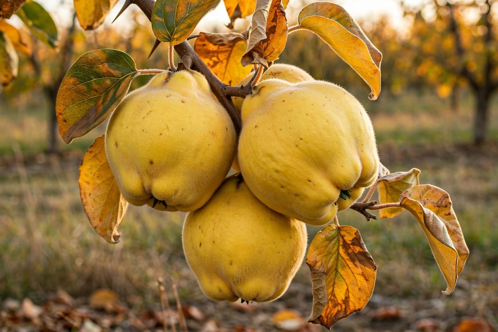

Quince
From Wikipedia, the free encyclopedia

The quince (Cydonia oblonga) is a hard, golden, powerfully fragrant pome fruit of the rose family, native to the Caucasus and Central Asia. Raw, it is sour, astringent and nearly inedible; cooked, it performs fruit's most dramatic transformation, turning rosy pink and tender, its perfume — honey, pear, tropical flower — filling the house. The quince is a fruit of the old world par excellence: a candidate for the "golden apples" of Greek myth and the fruit of Aphrodite, eaten by Athenian brides under Solon's law, and preserved in northern kitchens for a thousand years before being displaced by easier fruits.
Marmalade's mother
The quince gave marmalade its name and first form: Portuguese marmelada was a stiff quince paste (from marmelo, quince), still made as membrillo in Spain — where a slab of it with Manchego cheese is a national pairing — and as cotignac in France and quince "cheese" in England. Quince jelly, clear and garnet, was a glory of the preserves cupboard; the fruit's abundant pectin set jellies of every other fruit before commercial pectin existed. Turkish ayva tatlısı poaches quinces in syrup to serve with clotted cream; Persian and Central Asian cooks add quince to stews, where it melts into sour-sweet richness.
Decline and revival
Quinces need cooking, space and patience — three shortages in modern fruit farming — and orchards dwindled through the 20th century. Heritage growers and Middle Eastern and Central Asian diasporas keep it alive, and chefs rediscovering "forgotten fruits" return to it each autumn. The tree, gnarled and blossom-laden in spring, is worth growing for the scent of a single ripe fruit in a room, a perfume no other pome matches.